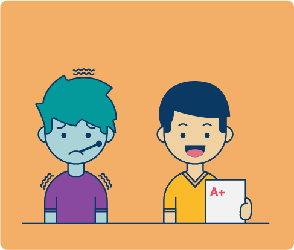

Paul and Miriam are twins. One day they both
woke up sick with a high fever, so their mother
didn’t let them go to school. It seemed that many
children got the flu and were absent from school.
The cold weather plus three days of rain helped
the flu virus spread among the students. Since
winter started, the teacher advised the students to
cover themselves tightly before going outdoors.
Their classmates were sad because they really
missed Paul and Miriam.
Paul’s best friend, Joshua, was happy because he wasn’t sick. He was even happier
when he received his report card with straight A’s. Joshua’s parents were proud of their
son, but were worried about his sister, Rosie. She fell from her bicycle and broke her arm
while playing in the backyard. Her parents tried to cheer her up by renting some movies and
making some popcorn. This was an interesting week for some of the students of Roosevelt’s
Elementary School.